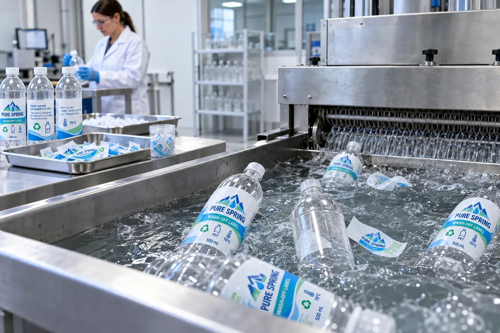

Short answer
A wash-off label is designed to hold during the product's use phase and release under defined recycling wash conditions. The goal is to let the label and adhesive separate from PET flakes so cleaner bottle material can continue through the recycling process.
The phrase sounds simple. The buying decision is not. A label face, adhesive, ink, coating, bottle color and coverage area all enter the package assessment. Local infrastructure matters too. A supplier cannot turn a global sustainability promise into fact with one material name.
What wash-off technology is trying to solve
During use, a beverage label has to survive filling, condensation, transport and the customer's hand. During recycling, that same bond may need to release in a controlled wash so the label material can separate from PET. Good performance therefore looks contradictory: stay on now, come off later.
| Stage | Required behavior | Buyer evidence |
|---|---|---|
| Filling and distribution | Secure bond and legible print | Package trials under real handling |
| Consumer use | Resistance to water, scuffing and temperature | Finished bottle testing |
| Recycling wash | Controlled label and adhesive separation | Recognized test or guidance documentation |
| Material sorting | Separated label behaves as intended in the stream | Full construction and density information |
A typical launch brief: "make it sustainable"
Consider a composite inquiry. A beverage team asks for a clear label on a clear PET bottle and wants a recycling symbol added. The intention is good. The brief does not state label coverage, adhesive code, ink coverage or destination market.
I could quote a standard clear BOPP label and let the artwork carry the environmental message. That is the easy sale. The harder, more useful response is to ask what recycling guidance the package needs to meet and whether the chosen label construction has supporting evidence. Sometimes the answer changes the adhesive. Sometimes it changes the label area. Sometimes it changes the claim.
Five parts of the package to review
- Bottle: PET resin, color and any barrier construction.
- Label face: paper or film type, density and coverage.
- Adhesive: use-phase bond plus release under specified wash conditions.
- Printing and finish: ink, varnish, lamination and metallic decoration.
- Market: collection, sorting and recycling guidance where the package is sold.
UPM describes wash-off constructions intended to release in PET recycling, while a FINAT white paper explains the broader idea of switchable adhesives that hold during use and separate in washing. Those references show why the exact construction matters; they do not make every self-adhesive label equivalent.
Where a standard label can still be the honest choice
Not every small test run can justify a specialized construction immediately. A standard waterproof label may be the practical launch option when volumes are low and the package claim remains modest. The responsible move is to avoid overstating compatibility, keep material records and plan a validated upgrade as volume stabilizes.
A sustainability project that forces premature inventory into the warehouse can create its own waste. The best answer may change between a 300-bottle market test and a mature national program.
Our view
Green language should be harder to print than green ink
A recycling claim attracts attention because it reassures the buyer and the brand team at the same time. That is exactly why it needs evidence.
If the documentation is vague, make the artwork claim smaller before making the word "sustainable" larger.
What to request from a label supplier
- Face material and adhesive product codes.
- Intended bottle resin and compatible recycling stream.
- Test method, guidance reference or third-party compatibility evidence.
- Limitations for ink, coverage, lamination and bottle color.
- Use-phase testing for condensation and handling.
- Written language that supports any proposed packaging claim.
For clear bottle artwork, read Clear Labels and White Ink. For moisture performance, use the Waterproof Beverage Label Guide. Confirm final environmental claims with the responsible brand and compliance team for the destination market.
Frequently asked questions
What is a wash-off label adhesive?
It is an adhesive designed to release under specified recycling wash conditions so the label can separate from the PET bottle. Performance depends on the complete label construction and the recycling process.
Does a recyclable label make a PET bottle recyclable?
Not by itself. Bottle resin, color, closure, label face, adhesive, inks, coverage and local collection and processing all affect the package. Claims should be based on the complete packaging system and target market.
Are paper labels suitable for PET recycling?
Some paper wash-off constructions are designed for PET or HDPE recycling, but ordinary paper and ordinary adhesive should not be assumed compatible. Request evidence for the proposed construction.
How should a buyer verify a recycling claim?
Ask for the exact material and adhesive codes, the test method or compatibility evidence, applicable recycling guidance and any limitations involving bottle color, label coverage, inks or market.
Related label guides
- Labels for HDPE and PP Containers: Adhesive Guide
- Direct Thermal vs Thermal Transfer Labels
- Hot Foil vs Cold Foil vs Metallic Ink Labels
Review the complete label construction
Send the package photos, material, finished label size, quantity by artwork, storage conditions and application method. We can review fit, material and production details before preparing a quote and digital proof.